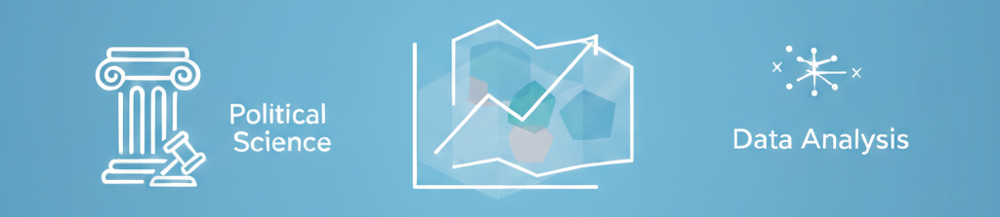

Appendix A — Widely-Used Political Science Datasets
| Dataset Name | Description | Website |
|---|---|---|
| Public Opinion, Political Behavior | ||
| American National Election Study (ANES) | Voting and public opinion data in the U.S. over time | Link |
| Cooperative Election Study (CES) | U.S. surveys on public opinion and elections over time | Link |
| Comparative Study of Election Surveys | Election surveys across countries over time | Link |
| World Values Survey | Public opinion surveys across countries over time | Link |
| General Social Survey (GSS) | U.S. surveys on public opinion over time | Link |
| Roper Center for Public Opinion Research (iPoll) | Archive of public opinion surveys in the U.S. over time | Link |
| Regional and Global “Barometer” Surveys | ||
| Afrobarometer | Public opinion surveys in African countries over time | Link |
| AmericasBarometer (LAPOP) | Public opinion surveys in North and South American countries over time | Link |
| Arab Barometer | Public opinion surveys in Middle East and North African countries over time | Link |
| Asian Barometer | Public opinion surveys in Asian countries over time | Link |
| Eurasia Barometer | Public opinion surveys in post-communist countries in Eurasia over time | Link |
| Eurobarometer | Public opinion surveys in European countries over time | Link |
| Latinobarómetro | Public opinion surveys in Latin American countries over time | Link |
| Democracy, Institutions, Governance | ||
| Varieties of Democracy (V-Dem) | Measures of democracy and other country characterstics over a long period of time | Link |
| Polity Project | Regime characteristics of countries over time | Link |
| Comparative Political Dataset | Political and institutional measures for EU and OECD countries over time | Link |
| Comparative Constitutions Project | Measures of constitutional characteristics across countries over time | Link |
| Comparative Agendas Project | Policy attention and legislative agendas in multiple countries over time | Link |
| Database of Political Leaders | Measures of characteristics and post-tenure activity of leaders in countries across the world over time | Link |
| Correlates of State Policy Project | State-level (U.S.) data on policies and institutions over time | Link |
| International Relations, Conflict, Human Rights | ||
| Correlates of War (COW) | Measures of interstate conflicts and military characteristics; alliances | Link |
| Uppsala Conflict Data Program | Data on civil wars and violence across the world over time | Link |
| UN Human Rights Agreements Data | Data on human rights conventions | Link |
| Armed Conflict Location and Event Data | Measures of violence and protests across countries and over time | Link |
| Global Terrorism Database | Measures of domestic and international terrorist events over time | Link |
| Ethnic Power Relations Data | Measures of ethnic group power across countries over time | Link |
| Elections | ||
| The Elections Archive (THEA) | Data on subnational election results | Link |
| MIT Election Data | U.S. election voting records and data | Link |
| National Elections Across Democracy and Autocracy | Election results across countries over time | Link |
| Voter Turnout Database (IDEA) | Meaures of voter turnout across countries over time | Link |
| Perceptions of Election Integrity | Expert surveys on election integrity | Link |
| Open Elections | Election results in U.S. states, precinct level | Link |
| Manifesto Project | Measures of party platforms across countries over time | Link |
| Open Secrets | U.S. campaign finance data | Link |
| Legislative Politics | ||
| Legislative Effectiveness Scores | Measures of legislator success at moving their laws through Congress | Link |
| NOMINATE Scores | Ideology measures for members of Congress over long periods of time | Link |
| Judicial Politics, Courts | ||
| Supreme Court Database | Measures of Supreme Court case characteristics, outcomes, and justices’ votes | Link |
| Martin-Quinn Scores | Ideology scores for Supreme Court justices | Link |
| Judicial Common Space Scores | Ideology scores for Supreme Court justices, lower court judges that are in same policy space as members of Congress and the president | Link |
| U.S. Courts of Appeals Database | Measures of U.S. Courts of Appeals case characteristics, outcomes, and judges’ votes | Link |
| CJEU Database | Measures of case characteristics, outcomes, and votes for the Court of Justice for the European Union | Link |
| Political Economy, Environmental Policy | ||
| World Economics and Politics Dataverse | Measures of trade and macroeconomic indicators over time | Link |
| Policy Instruments for the Environment Database | Measures of environmental features across countries over time | Link |
| Climate Change Laws of the World | Data on climate legislation across countries over time | Link |
| Climate Change Discourse, Manifestos | Measures of party platforms on environmental policy | Link |
| World Income Inequality Database | Measures of income inequality across countries over time | Link |
| Penn World Table | Economic data across countries over time | Link |
Note: I recently updated the table, including pruning inactive links. I developed the list of data sources with some assistance from in-depth Google searches (including Google Gemini results) to ensure inclusion of a comprehensive range of data sources across subfields. Descriptions are meant to be brief to convey the basic elements of the datasets. Click on links for more information.